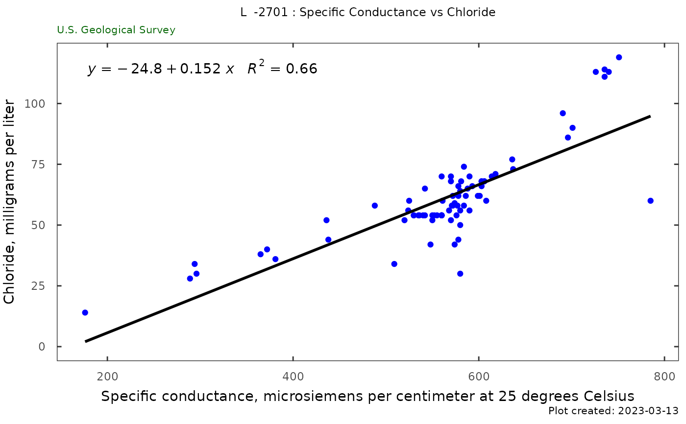
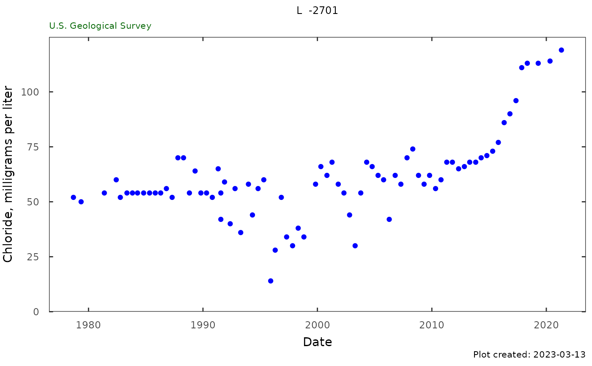
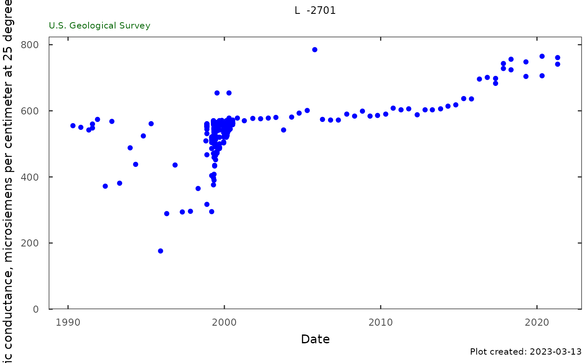
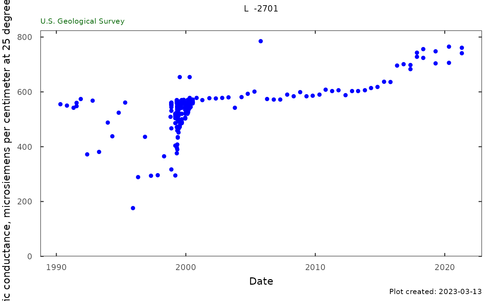

Specific conductance and chloride
sc_cl.RdFunctions to create the individual chloride, specific conductance, and combination plots and tables for a single site.
Usage
Sc_Cl_plot(qw_data, plot_title, subtitle = "U.S. Geological Survey")
Sc_Cl_table(qw_data)
qw_plot(
qw_data,
plot_title,
y_label = NA,
CharacteristicName = "Chloride",
start_date = NA,
end_date = NA,
subtitle = "U.S. Geological Survey"
)
qw_summary(qw_data, CharacteristicName, norm_range = NA)Arguments
- qw_data
data frame returned from dataRetrieval::readWQPqw, must include columns sample_dt, parm_cd, result_va
- plot_title
character title for plot
- subtitle
character. Sub-title for plot, default is "U.S. Geological Survey".
- y_label
character label for y axis. If left as NA, the function will attempt to use the "variableInfo" attribute of qw_data. This is attached to dataRetrieval output.
- CharacteristicName
character CharacteristicName to filter to.
- start_date
Date to start plot. If
NA(which is the default), the plot will start at the earliest measurement.- end_date
Date to end plot. If
NA(which is the default), the plot will end with the latest measurement.- norm_range
a numerical range to potentially group the data. If NA, no grouping is shown.
Examples
# site <- "263819081585801"
# parameterCd <- c("00095","90095","00940","99220")
# site_data <- dataRetrieval::readWQPqw(site,
# parameterCd)
# Using package example data:
qw_data <- L2701_example_data$QW
plot_title <- paste(attr(qw_data, "siteInfo")[["station_nm"]], ": Specific Conductance vs Chloride")
Sc_Cl_plot(qw_data, plot_title)
#> Warning: Removed 306 rows containing non-finite values (stat_smooth).
#> Warning: Removed 306 rows containing non-finite values (stat_poly_eq).
#> Warning: Removed 306 rows containing missing values (geom_point).

sc_cl <- Sc_Cl_table(qw_data)
plot_title <- attr(qw_data, "siteInfo")[["station_nm"]]
qw_plot(qw_data, plot_title, CharacteristicName = "Chloride")

qw_plot(qw_data, plot_title, CharacteristicName = "Specific conductance")
 qw_plot(qw_data,
plot_title,
CharacteristicName = "Specific conductance",
start_date = "1990-01-01")

site <- "USGS-01491000"
qw_data_phos <- dataRetrieval::readWQPqw(site, "Orthophosphate")
qw_plot(qw_data_phos ,
CharacteristicName = "Orthophosphate",
plot_title = "Choptank: Orthophosphate")
#> Warning: Removed 50 rows containing missing values (geom_point).
qw_summary(qw_data, CharacteristicName = "Chloride",
norm_range = c(230, 860))
#> Analysis Result
#> 1 Date of first sample 1978-09-06
#> 2 First sample result (mg/l) 52
#> 3 Date of last sample 2021-04-27
#> 4 Last sample result (mg/l) 119
#> 5 Date of first sample within 230 to 860 mg/l
#> 6 Date of first sample with 861 mg/l or greater
#> 7 Minimum (mg/l) 14
#> 8 Maximum (mg/l) 119
#> 9 Mean (mg/l) 60.8
#> 10 First quartile (mg/l) 54
#> 11 Median (mg/l) 58
#> 12 Third quartile (mg/l) 68
#> 13 Number of samples 80
qw_summary(qw_data, CharacteristicName = "Specific conductance",
norm_range = NA)
#> Analysis Result
#> 1 Date of first sample 1979-05-09
#> 2 First sample result (uS/cm @25C) 580
#> 3 Date of last sample 2021-04-27
#> 4 Last sample result (uS/cm @25C) 761
#> 5 Minimum (uS/cm @25C) 176
#> 6 Maximum (uS/cm @25C) 785
#> 7 Mean (uS/cm @25C) 552
#> 8 First quartile (uS/cm @25C) 544
#> 9 Median (uS/cm @25C) 560
#> 10 Third quartile (uS/cm @25C) 569
#> 11 Number of samples 392
qw_plot(qw_data,
plot_title,
CharacteristicName = "Specific conductance",
start_date = "1990-01-01")

site <- "USGS-01491000"
qw_data_phos <- dataRetrieval::readWQPqw(site, "Orthophosphate")
qw_plot(qw_data_phos ,
CharacteristicName = "Orthophosphate",
plot_title = "Choptank: Orthophosphate")
#> Warning: Removed 50 rows containing missing values (geom_point).
qw_summary(qw_data, CharacteristicName = "Chloride",
norm_range = c(230, 860))
#> Analysis Result
#> 1 Date of first sample 1978-09-06
#> 2 First sample result (mg/l) 52
#> 3 Date of last sample 2021-04-27
#> 4 Last sample result (mg/l) 119
#> 5 Date of first sample within 230 to 860 mg/l
#> 6 Date of first sample with 861 mg/l or greater
#> 7 Minimum (mg/l) 14
#> 8 Maximum (mg/l) 119
#> 9 Mean (mg/l) 60.8
#> 10 First quartile (mg/l) 54
#> 11 Median (mg/l) 58
#> 12 Third quartile (mg/l) 68
#> 13 Number of samples 80
qw_summary(qw_data, CharacteristicName = "Specific conductance",
norm_range = NA)
#> Analysis Result
#> 1 Date of first sample 1979-05-09
#> 2 First sample result (uS/cm @25C) 580
#> 3 Date of last sample 2021-04-27
#> 4 Last sample result (uS/cm @25C) 761
#> 5 Minimum (uS/cm @25C) 176
#> 6 Maximum (uS/cm @25C) 785
#> 7 Mean (uS/cm @25C) 552
#> 8 First quartile (uS/cm @25C) 544
#> 9 Median (uS/cm @25C) 560
#> 10 Third quartile (uS/cm @25C) 569
#> 11 Number of samples 392